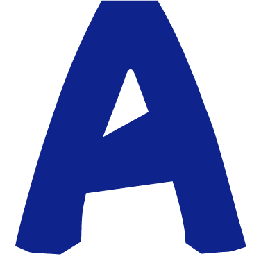
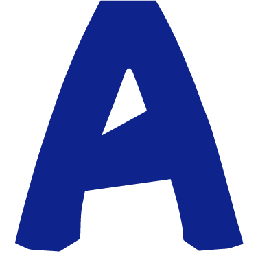

/SOBRE MÍ
Hola, mi nombre es Florencia pero prefiero que me digan Flor, tengo 27 años y resido en Lanús. Estudiante avanzada de Lic. en Diseño y Comunicación Visual, aunque también fui estudiante de Arquitectura hasta que decidí tirarme de lleno hacia el diseño gráfico.
Tengo un problema (o virtud): me gusta hacer de todo un poco. Mi medio de expresión es el arte, en todas sus formas. Me gusta pintar, dibujar, diseñar y todo lo que implique manualidades. Es mi motivación y forma de comunicarle al mundo las cosas que tengo para decir, lo cual hace que sea muy detallista y creativa a la hora de dejar volar mi imaginación.
Mi objetivo es crear diseños que aporten valor visual y funcionalidad, contribuyendo desde mis conocimientos y creatividad.
/ESTUDIOS
- BACHILLER EN CIENCIAS SOCIALES
- ARQUITECTURA
- LIC. EN DISEÑO Y COMUNICACIÓN VISUAL
Centro Educativo Santa Clara de Asís (2010-2015)
Universidad Nacional de Avellaneda (2016-2020)
Universidad Nacional de Lanús (2022)
/EXPERIENCIA
- Emprendimiento de artesanías
- Community Manager
- LIC. EN DISEÑO Y COMUNICACIÓN VISUAL
Diciembre2020 a la actualidad
2021 a la actualidad
2024 a la actualidad
/CONOCIMIENTOS
 



/IDIOMA
- Español Nativo
- Inglés Intermedio
/CONTACTO
- Celular
canedoflorencia@gmail.com
+54 11 2345-6789